FoodLuck MEO 操作説明書 09
インサイト
Googleで見られた回数と、お客様の行動を読み、毎月のMEO運用に活かすための現場マニュアル
| この資料の目的 インサイトは、Googleビジネスプロフィールがどれだけ見られ、そこから電話・ルート検索・Webサイト閲覧などにつながったかを見る画面です。売上そのものではありませんが、来店前のお客様の動きが見えるため、写真、投稿、クチコミ、メニュー改善の判断材料になります。 |
|---|
1. インサイトでできること
インサイトでは、Google検索やGoogleマップで店舗情報がどれだけ見られたか、その後にお客様がどんな行動をしたかを確認します。飲食店では、毎月1回、前月の数字を見て、写真・投稿・クチコミ返信・メニュー情報の改善につなげる使い方が基本です。
| 見る項目 | 意味 | 飲食店での使い方 | 注意点 |
|---|---|---|---|
| 全体閲覧ユーザー数 | Google検索・Googleマップで店舗情報を見たユーザー数 | 露出が増えているかを見る | 2023年以降はユニークユーザー寄りの数え方 |
| 全体アクション数 | 電話、ルート、Webサイトなどの操作数 | 来店前の関心が行動につながったかを見る | 電話は着信完了ではなくタップや表示で数える |
| 全体アクション率 | 見た人のうち、行動した割合 | 写真や投稿、クチコミが行動を促せているかを見る | 閲覧数が大きく変わると率も動く |
| 検索経路 | Google検索、Googleマップ、PC、スマホの内訳 | どこで見つけられているかを見る | 自分で検索した分もカウントされる場合がある |
| 比較・分析 | 前年比較、業種別、都道府県別、クロス分析 | 月次の振り返りや改善優先度の判断に使う | 平均比較は参考値として扱う |
管理画面: インサイト情報の全体像
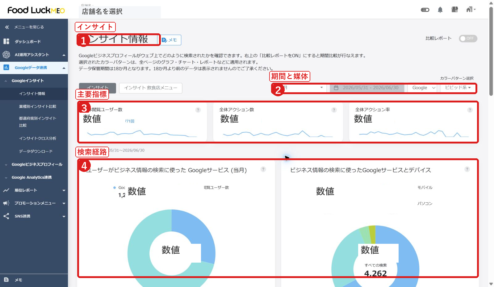
- 左メニューの「Googleデータ連携」から「Googleインサイト」>「インサイト情報」を開きます。
- 上部で期間・媒体を切り替え、主要指標、検索経路、アクション数を順番に確認します。
FAQ画像: 個店インサイトの主要画面
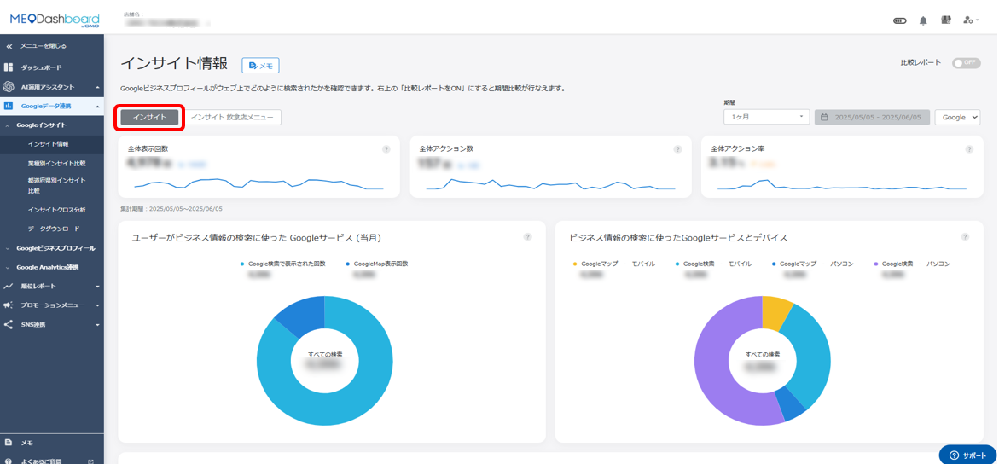
- 個店画面では、店舗単位で閲覧ユーザー数、アクション数、アクション率、検索経路を確認します。
- 複数店舗を比較したい場合は、グループ画面のインサイトを使います。
2. まず見る4つの数字
インサイト画面を開いたら、最初に見るのは「全体閲覧ユーザー数」「全体アクション数」「全体アクション率」「想定来店者数」です。現場では細かい数字を追いすぎるより、前月より増えたか、落ちたか、その理由が説明できるかを確認します。
| 項目 | 見る意味 | 現場での判断 |
|---|---|---|
| 全体閲覧ユーザー数 | Google検索とGoogleマップで店舗情報を見たユーザー数です。 | 写真・投稿・クチコミなどで見つけられる機会が増えているかを見ます。 |
| 全体アクション数 | 電話、Webサイト、ルート検索など、お客様が次の行動をした回数です。 | 閲覧はあるのに行動が少ない場合、写真や投稿、メニュー、クチコミの見直しをします。 |
| 全体アクション率 | 見た人のうち、行動した人の割合を表します。 | 露出だけでなく、来店前の関心を作れているかを見る指標です。 |
| 想定来店者数 | 電話・ルート・Webサイトなどの行動から推定した来店見込み数です。 | 実来店数ではなく、月次の目安として使います。 |
FAQ画像: 全体閲覧ユーザー数
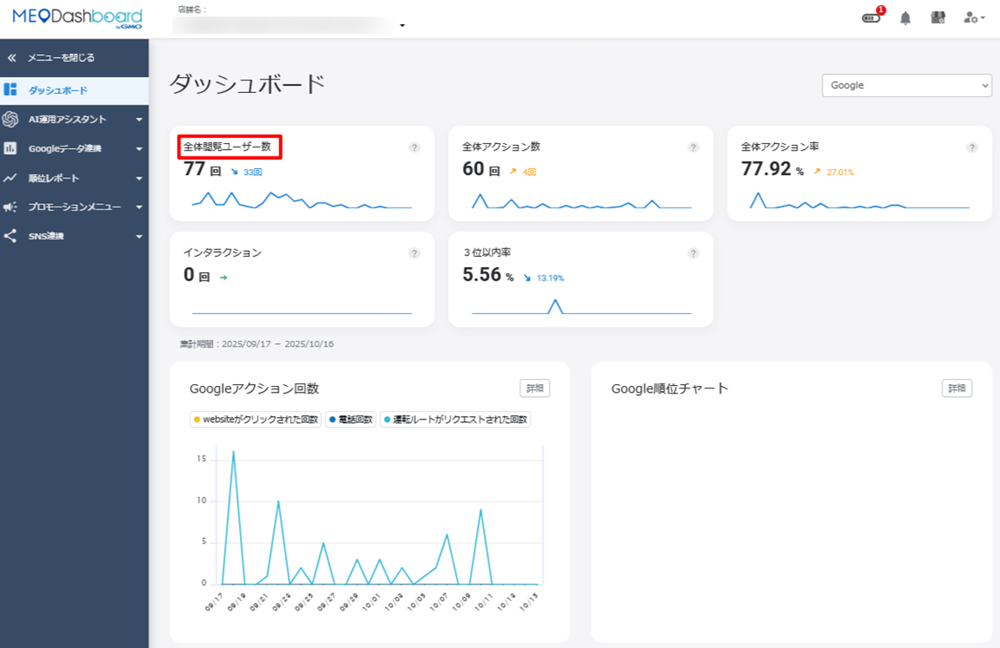
- 全体閲覧ユーザー数は、Google検索とGoogleマップ経由で店舗情報を見た人数の合計です。
FAQ画像: 全体アクション数・アクション率
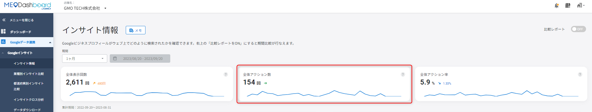
- アクション数は、電話、Webサイト、ルート検索などの操作を合計した数字です。
- アクション率は、見た人に対して行動につながった割合として確認します。
FAQ画像: 想定来店者数
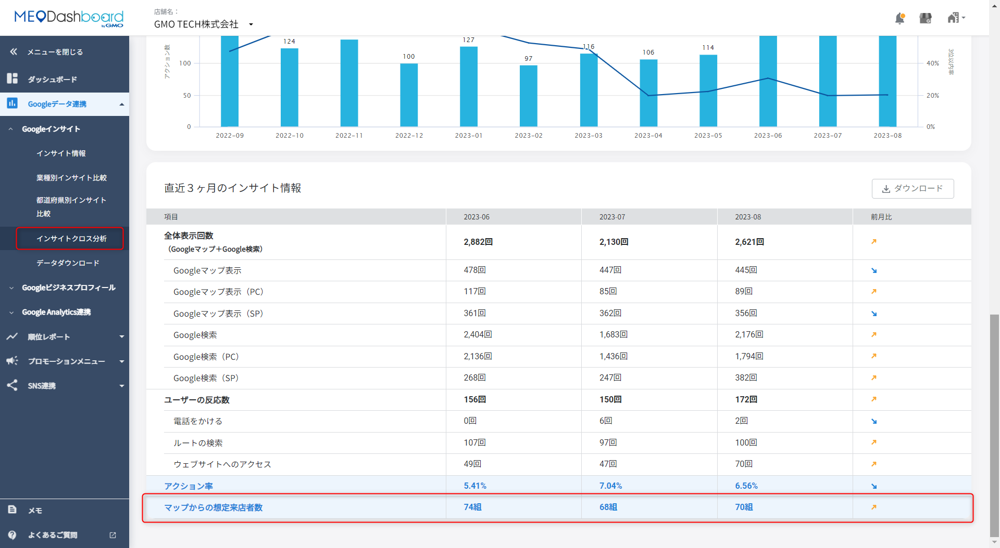
- 想定来店者数はFoodLuck MEO側で推定される目安です。実際の来店人数として扱わず、前月比や傾向確認に使います。
3. Google検索・Googleマップ・流入キーワードを見る
次に、お客様がどこで店舗を見つけたかを確認します。Google検索で見られているのか、Googleマップで見られているのか、スマホが多いのか、PCが多いのかを見ることで、お客様の探し方が分かります。
- インサイト情報を開く対象店舗を選び、左メニューから「Googleインサイト」>「インサイト情報」を開きます。
- 期間を選ぶ1週間、1ヶ月、3ヶ月、カスタム期間など、見たい期間に切り替えます。月次確認では前月1ヶ月を基本にします。
- 検索経路を見るGoogle検索、Googleマップ、PC、スマホの内訳を確認します。飲食店ではスマホ経由が多い傾向があります。
- 流入キーワードを見るどんな検索語句で店舗情報が表示されたかを確認します。飲食店名だけでなく、地域名、業態、メニュー名が入っているかを見ます。
FAQ画像: Google検索回数とGoogleマップ検索回数の違い
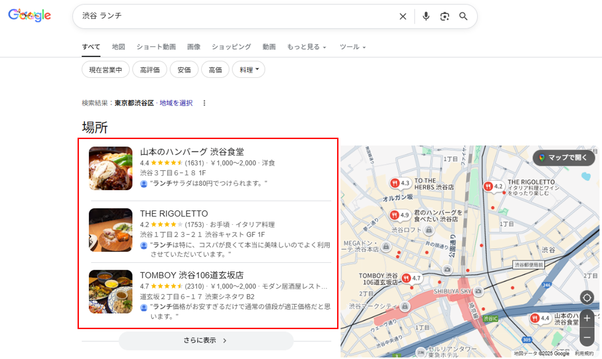
- Google検索は検索結果画面で見られた数、Googleマップは地図検索上で見られた数です。
- 「さらに表示」などで検索結果に自店が表示された場合も、Google側の仕様に従ってカウントされます。
FAQ画像: 流入キーワードの確認
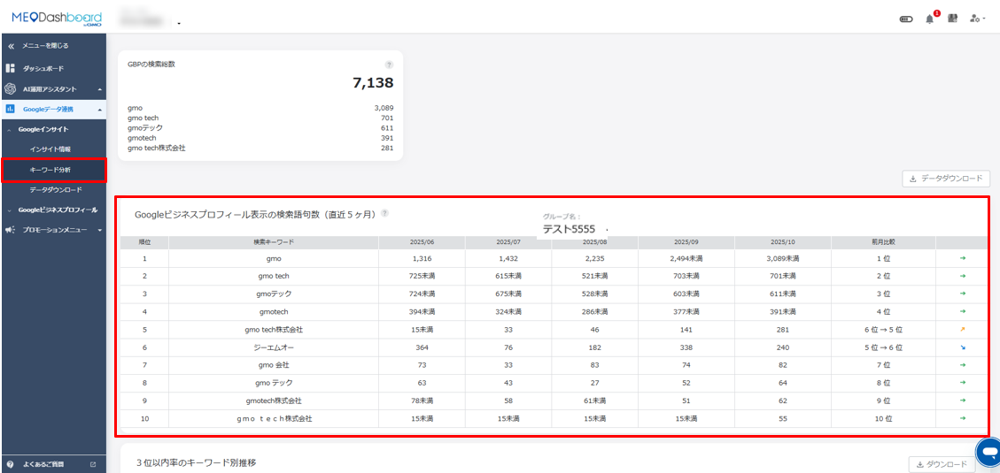
- 個店では、順位レポートのキーワード分析から、Googleビジネスプロフィール表示につながった検索語句を確認します。
- 上位10件以外はCSVで確認できます。検索数が少ない語句は、Googleの仕様で「15以下」と表示されることがあります。
| 自分で検索した場合の影響 オーナーやスタッフが自分で検索した場合や、店舗情報からWebサイト・ルート・電話を押した場合も、Google側の仕様上、数値に含まれることがあります。検証のために何度も押すと数字が動くことがあるため、月次の傾向を見るときはその点を差し引いて判断します。 |
|---|
4. お客様の行動を見る
アクション数は、Google上で店舗情報を見たお客様が、次にどの行動をしたかを見る数字です。飲食店では、ルート検索、電話、Webサイト、予約リンクの動きが重要です。
| アクション | カウントされる内容 | 見方 |
|---|---|---|
| 電話 | 電話番号の表示や電話ボタンのタップ | 実際に電話がつながった回数ではありません。押してキャンセルしても差が出ます。 |
| ルート | ルート検索ボタンのタップやクリック | 来店意向が高い行動です。天候や曜日、イベントの影響も受けます。 |
| Webサイト | Webサイトボタンのクリックやタップ | メニュー、予約、詳細確認につながっているかを見ます。 |
| 予約 | Google予約ボタンや予約導線のクリック | 予約リンクを設定している店舗では重要な行動です。 |
| メニュー・注文 | 飲食店向けのメニュー表示、注文関連の操作 | 対応機能を使っている場合に確認します。 |
FAQ画像: 電話回数と実際の着信回数の違い
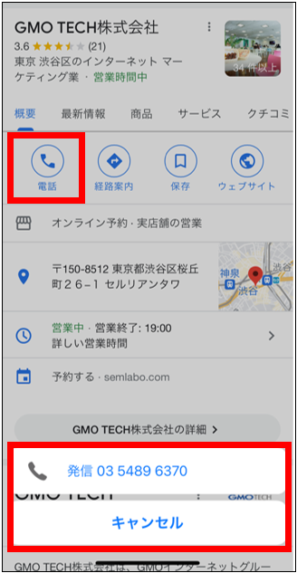
- 電話回数は、Google上で電話番号を表示したり、電話ボタンを押した回数として扱われます。
- 実際の着信数や通話完了数とは一致しない場合があります。
FAQ画像: 全体アクション数の推移
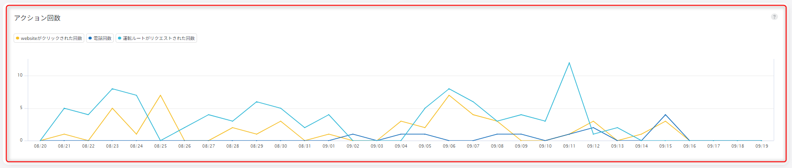
- Webサイト、ルート、電話のどれが増減しているかを分けて見ると、改善ポイントを判断しやすくなります。
5. 期間を切り替えて比較する
インサイトは、1週間、1ヶ月、3ヶ月、カスタム期間などで表示期間を切り替えられます。カスタム期間では最大18ヶ月前まで確認できます。18ヶ月より前のデータは表示されないため、必要な場合は定期的に保存します。
FAQ画像: 表示期間の切り替え
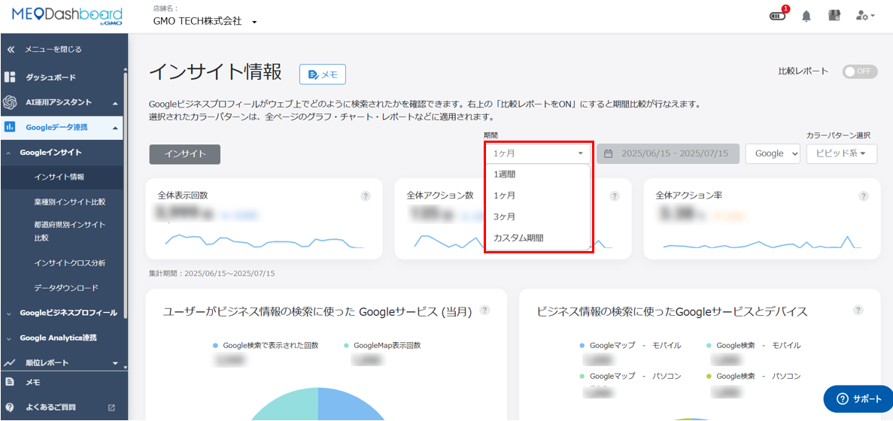
- 月次確認では、前月の1ヶ月を選んで確認します。
- FAQでは、1ヶ月の範囲は確認日の前日を終点として計算される例が示されています。
- 通常の月次確認前月1ヶ月を選び、閲覧ユーザー数、アクション数、アクション率を見ます。
- 前年との比較画面右上の「比較レポート」をONにし、前年、上期・下期、四半期、カスタム比較を選びます。
- 数字の変化を読む増減だけで判断せず、営業時間、定休日、季節要因、キャンペーン、投稿頻度、クチコミ件数と一緒に見ます。
- 保存が必要な場合過去データを長く残したい場合は、定期的にダウンロードして保管します。
FAQ画像: 比較レポートの見方
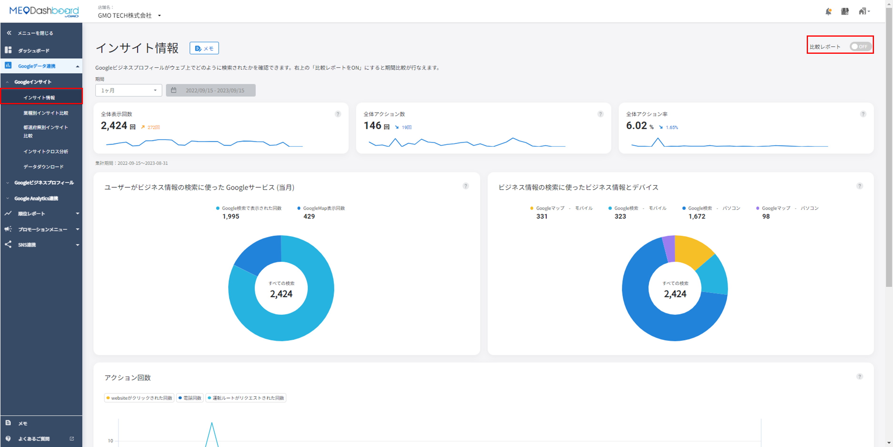
- 比較レポートをONにすると、前年や任意期間との比較ができます。
- 2022年9月から12月以降はGoogle側の計測仕様変更があり、同じ人の複数回閲覧が重複して数えられにくくなっています。大きな減少があっても、仕様変更の影響を確認します。
6. インサイトクロス分析を見る
インサイトクロス分析では、順位の状態とアクション数の関係を見ます。「上位表示できているのにアクションが少ない」のか、「順位が落ちたことで閲覧や行動が減った」のかを切り分けるために使います。
FAQ画像: アクション数と3位以内率の推移
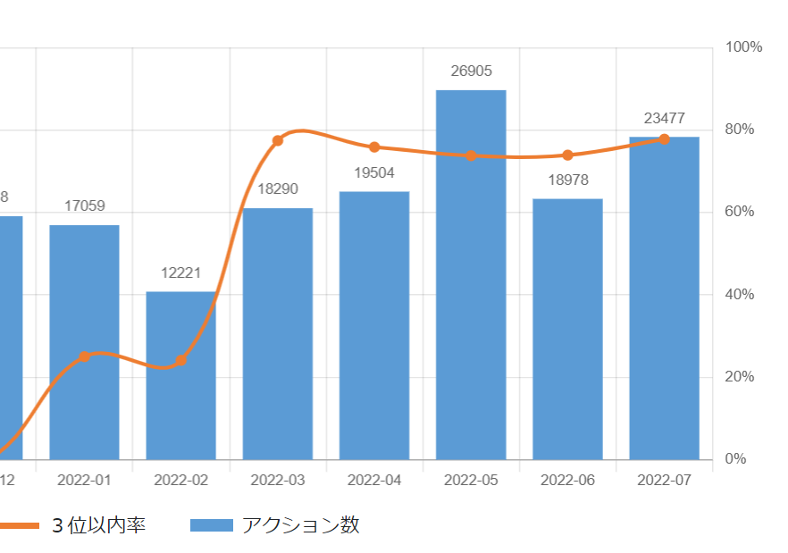
- 3位以内率は、設定したキーワードでGoogle検索したときに、1位から3位以内に入っている割合です。
- 3位以内率が上がっているのにアクションが増えない場合は、写真、投稿、メニュー、クチコミ、特典など、見た後に行動したくなる要素を見直します。
FAQ画像: 3位以内率とランキング別キーワード数

- 1位から3位の割合が増え、4位から10位の割合が減る流れが理想です。
- 4位から10位に残っているキーワードは、キーワード分析で確認し、優先度を決めて対策します。
| 順位と行動はセットで見る 順位が良くなっても、お客様が魅力を感じなければ電話やルート検索にはつながりません。逆に、順位が下がっても常連客や指名検索が強い店舗ではアクションが大きく落ちない場合もあります。数字は一つだけで判断しないことが大切です。 |
|---|
7. 業種別・都道府県別の比較を見る
業種別インサイト比較と都道府県別インサイト比較では、自店の数字を平均値と比べられます。ただし、比較対象には地域や業態の違う店舗も含まれるため、順位付けではなく参考値として使います。
FAQ画像: 業種別インサイト比較
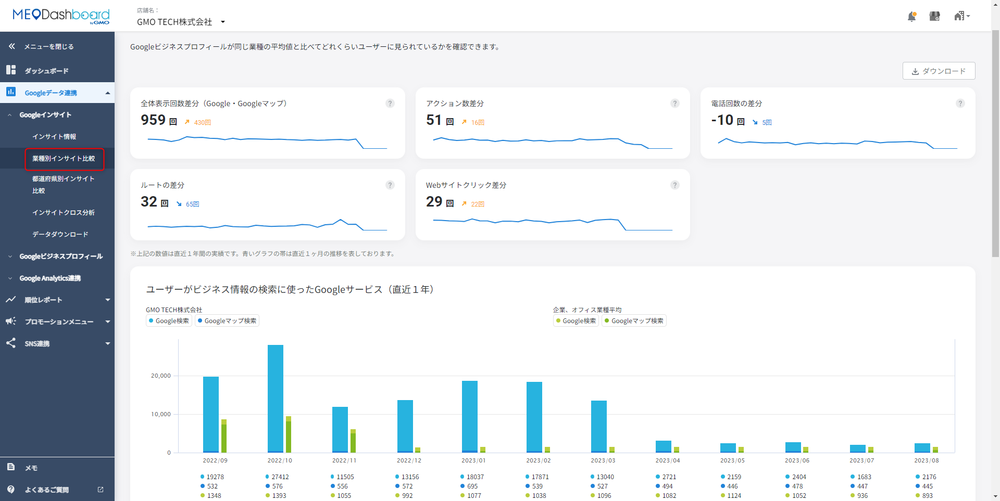
- 同じ業種として登録されている店舗の平均と比較します。
- 比較対象の具体的な店舗名や会社名は開示されません。
FAQ画像: 都道府県別インサイト比較
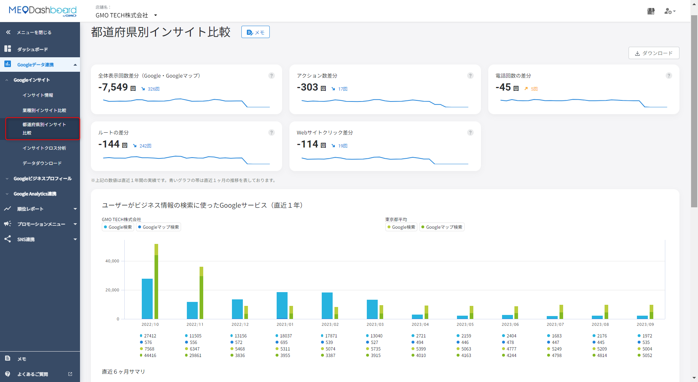
- 店舗住所の都道府県をもとに平均と比較します。
- 業種やエリアの細かい違いまでは揃わないため、参考として見ます。
| 業種変更はFoodLuck側に相談 業種別比較の業種を変更する操作は、設定画面や店舗テンプレートの更新を伴います。飲食店の現場スタッフが日常的に触る項目ではないため、変更が必要な場合はFoodLuck側へ依頼してください。 |
|---|
8. 数字が0・未表示・大きく変動する時
インサイトの数字は、Google側のデータをFoodLuck MEOが取得して表示しています。そのため、反映までに時間がかかる、直近数日が出ない、Google側の仕様変更で数字の見え方が変わることがあります。
| 状態 | 主な原因 | 対応 |
|---|---|---|
| インサイトが表示されない | GBP連携が切れている、GBPステータスに問題がある | 店舗基本情報の連携状態を確認し、必要ならFoodLuck側へ連絡します。 |
| 数値が0のまま | Google側が0を返している、連携直後で反映待ち | 1週間以上0が続く、急に0になった場合は再連携や確認を依頼します。 |
| 直近の数字が出ない | Google APIの反映待ち | 2から3日、場合により5から7日程度待って再確認します。 |
| 数字が大きく上下する | 季節、曜日、競合、営業時間、Google仕様変更 | 1日単位で判断せず、月次で傾向を見ます。 |
| 前年と大きく違う | 2022年以降の計測仕様変更の影響 | 同じユーザーの重複閲覧が数えられにくくなった点を踏まえます。 |
FAQ画像: 0表示・未表示の確認箇所
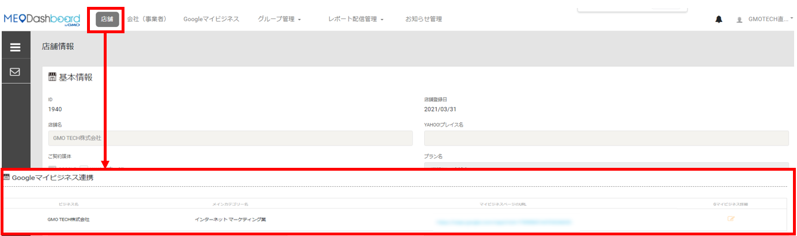
- 連携後1週間以上経っても0のまま、または突然0になった場合は、GBP連携の状態確認が必要です。
FAQ画像: 直近数値が表示されない場合
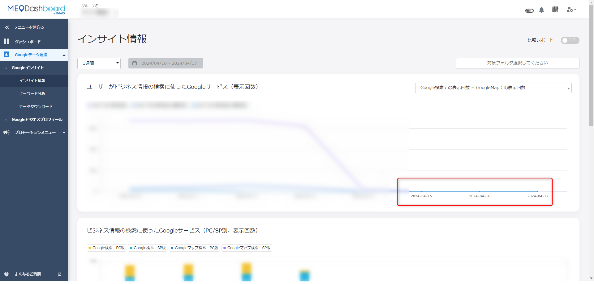
- 直近のインサイトはGoogle側の反映に時間がかかるため、数日空けて確認します。
- Dashboard側はGoogleから取得できた値を表示するため、Google側が0を返している間は0表示になります。
| 取得タイミング FAQでは、DashboardがGoogleのインサイト情報を毎日21:30に取得すること、Google側のデータ反映には通常5から7日ほどかかる場合があることが説明されています。日報のように当日・前日の数字を厳密に追うより、月次で安定した数字を見る運用が向いています。 |
|---|
9. 飲食店の月次チェックリスト
月初に前月分を確認し、数字を見て終わりにせず、次の投稿・写真・クチコミ依頼・メニュー整備につなげます。現場で忙しい時ほど、見る項目を絞ると続けやすくなります。
□ 前月1ヶ月で、全体閲覧ユーザー数が増えたか、減ったかを確認した
□ 全体アクション数の内訳として、電話、ルート、Webサイト、予約のどれが動いたかを見た
□ アクション率が落ちている場合、写真、投稿、メニュー、クチコミ、店舗説明文を見直した
□ Google検索とGoogleマップ、スマホとPCの内訳を確認した
□ 流入キーワードに、地域名、業態名、主力メニュー名が入っているかを見た
□ 順位レポートやインサイトクロス分析と合わせて、上位表示と行動数の関係を確認した
□ 数字が0や未表示の場合、反映待ちか連携問題かを切り分けた
□ 必要なデータは月次でダウンロード、または社内資料に保存した
| 改善につなげる考え方 閲覧が少ない時は、順位、写真、投稿頻度、店舗情報の充実を見ます。閲覧はあるのに行動が少ない時は、写真の魅力、メニューの分かりやすさ、クチコミ返信、予約・Webサイト導線を見直します。現場の感覚と数字を合わせて見ることで、MEOは続けやすくなります。 |
|---|
10. この資料に反映したFAQ記事
インサイトカテゴリ配下のFAQ記事を、現場の操作順に再構成して本文へ反映しています。タイトルだけの一覧ではなく、日常確認、比較、トラブル対応、データ保存の各章に内容を分散して入れています。
| No. | FAQ記事 | 反映先 |
|---|---|---|
| 1 | API切り替えによる、閲覧ユーザー数の計測の変化（2023年1月～） | 8. 仕様変更・注意 |
| 2 | Googleのインサイト情報が表示されない | 8. トラブル対応 |
| 3 | Googleインサイトの数値の”0”表示について | 8. トラブル対応 |
| 4 | Googleビジネスプロフィールへの流入キーワード確認について | 3. 検索経路 |
| 5 | Google側の数値（インタラクション等）がDashboardで「0回」と表示される原因と反映タイミング | 8. トラブル対応 |
| 6 | Google検索回数とGoogleマップ検索回数の違い | 3. 検索経路 |
| 7 | MEO Dashboard内のインサイトデータを取得できる期間 | 5. 期間比較 |
| 8 | 【グループ】インサイト情報について | 1. 全体像 |
| 9 | 【個店】インサイト情報について | 1. 全体像 |
| 10 | アクション回数のカウント方法 | 2・4. 行動指標 |
| 11 | インサイトの電話回数と実際の着信回数の相違について | 4. 行動 |
| 12 | インサイトクロス分析の、アクション数と３位以内率の推移の見方 | 2・4. 行動指標 |
| 13 | インサイトクロス分析のおける”3位以内率”について | 6. クロス分析 |
| 14 | インサイトクロス分析内の、3位以内率とランキング別キーワード数推移について | 6. クロス分析 |
| 15 | インサイトデータの基データについて | 8. 注意 |
| 16 | インサイト情報で直近の数値が表示されない場合について | 8. トラブル対応 |
| 17 | インサイト情報の「ルートの検索」のカウント方法 | 4. 行動 |
| 18 | インサイト情報の数値の変動について | 8. 注意 |
| 19 | インサイト情報を前年と比較する方法 | 5. 比較 |
| 20 | インサイト項目の表示期間の設定方法 | 5. 期間 |
| 21 | 全体アクション数について | 2・4. 行動指標 |
| 22 | 全体アクション率について | 2・4. 行動指標 |
| 23 | 全体閲覧ユーザー数について | 2. 主要指標 |
| 24 | 想定来店者数について | 2. 主要指標 |
| 25 | 期間指定にある一ヶ月の範囲 | 5. 期間 |
| 26 | 業種別インサイトの業種を変更する方法 | 7. 比較 |
| 27 | 業種別インサイト比較について | 7. 比較 |
| 28 | 直近３ヶ月のインサイト情報について | 8. トラブル対応 |
| 29 | 自身で検索やGoogleビジネスプロフィールからアクションした場合（WEBサイト・ルート・電話）の影響 | 2・4. 行動指標 |
| 30 | 過去のインサイトデータを定期保存すべき理由 | 9. 月次運用 |
| 31 | 都道府県別インサイト比較について | 7. 比較 |